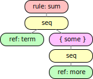
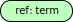

What's in a Sentence?
Check Before You Call!
Chapter two explained how to write grammars and chapter three explained how to extract terminals from input. This chapter discusses how to decide if an input string, i.e., a sequence of terminals delivered by lexical analysis, is a sentence of a language described by a grammar. Chapter one called this syntax analysis and it should result in a syntax tree for the sentence.
A grammar contains all the information required to create
a Parser object
with a method parse()
which implements syntax analysis — as long as the grammar is up to the job.
This chapter also shows how to check a grammar
to see if it can be used to create a Parser.
Both, this implementation of syntax analysis and the corresponding grammar check, are very intuitive and the technique is called LL(1) — left-to-right parsing with leftmost derivation. Chapter 10 discusses SLR(1) — left-to-right with rightmost derivation — an approach which is not quite as intuitive but which can use a larger class of grammars.
Trees
Here is a grammar for a sum of at least two, optionally signed numbers:
sum: term [{ more }];
more: '+' term | '-' term;
term: [ '+' | '-' ] Number | '(' sum ')';
The following input is in fact a sentence:
1 - (2 + - 3)
Arithmetic expressions such as this sum are often represented as expression trees where branch nodes are labeled with operators and leaf nodes are the numbers and variables in the expression.
 |
The levels of such an expression tree imply precedence, i.e., evaluation order; parentheses will not appear in an expression tree.
Similarly, we can visualize the rules of a grammar as trees.
Here is sum:
|  |
Recall that the right-hand side of a rule such as sum consists of one or more alternatives.
Each of these is a sequence.
In this case there is only one
and it consists of a reference term to another rule
and something in braces to be repeated one or more times.
Braces, in turn, contain alternatives, and each of those is again a sequence.
In this case there is one alternative,
namely a sequence consisting of a reference more to another rule.
Here is the tree for the rule more:
 |
more has two alternatives.
Each must again be a sequence.
One contains the literal '+', the other contains '-',
and each sequence then references the third rule, term:
 |
term also has two alternative sequences.
One contains brackets with signs and a Number token,
the other contains literals with parentheses enclosing a reference to a sum.
Brackets indicate something optional and contain alternatives, just as braces do. In this case there are two sequences and each only contains a literal with a sign.
Recognition
For the purpose of recognition, rules can be viewed as functions. The diagrams suggest that the rule trees consist of objects which belong to a small set of classes each of which can have methods.
At the top level, the parse() method
of the Parser object
generated by the parser()
method from the grammar delegates the recognition problem to the start rule sum
by calling a parse() method on the
Rule object which is the root of the tree:
Within the sum rule, there is only one alternative
and that sequence delegates to its first element,
which references and delegates to the rule term:
| |
term has two alternatives — time to look at the first terminal
provided by lexical analysis.
The proposed sentence is
1 - (2 + - 3)
and it starts with 1.
This Number only fits the first alternative of term,
and only after the optional part of the sequence is skipped.
We are on our way to building the syntax tree which will prove that the input is a sentence. The process can be viewed in example 4/01:
-
Prepare the grammar by pressing and press to see what tuples lexical analysis creates.
-
Next toggle and press to watch how syntax analysis, i.e., the
parse()method of theParserobject and theparse()methods in the rule tree, consume the tuples — one up front, and a next one whenever syntax analysis reaches the current terminal:
> g.config.lookahead = true
> g.parser().parse(program)
parser lookahead: (1) "1" Number
Number lookahead: (1) '-'
'-' lookahead: (1) '('
'(' lookahead: (1) "2" Number
Number lookahead: (1) '+'
'+' lookahead: (1) '-'
'-' lookahead: (1) "3" Number
Number lookahead: (1) ')'
')' lookahead: end of input
Back in the sum, after term has found Number 1,
the sequence advances to the next element
which requires finding more one or more times:
| |
While there are two alternatives,
the next input, literal '-', only fits the second alternative
and we get a little further in building the parse tree:
Syntax analysis continues, the parse() methods keep calling.
The next input is literal '(' which rule term can match with the second alternative:
Next, the sequence in term calls sum recursively before it will eventually match
the trailing literal ')'.
Here is the result,
where the rule calls and the terminals have been colored for emphasis:
The leaf nodes are all terminals, i.e., literals or tokens, and they match the proposed sentence
1 - (2 + - 3)
in order, i.e., we have found a parse tree and confirmed that the input is a sentence!
Strictly speaking,
the diagram only shows that the input is a sequence of terminals (turquoise nodes)
which are the leaves of an ordered tree.
The definition of a syntax tree in chapter one requires
that each branch node is labeled with a rule name
and that the rule name and the sequence of subtrees (branch nodes and leaves)
correspond to an ordered pair among the rules of the grammar.
Chapter two extended the grammar notation
and the extensions account for the white nodes in the diagram —
sequences and the iteration constructs with brackets [ opt ] and braces
{ some }.
Still, the red and white branch nodes interpreted together as extended notation
must appear in the grammar.
Parser and parse()
How do the Parser's parse() method
and the other parse() methods work?
The grammar diagrams in the preceding section showed that the job can be
elegantly distributed among the nodes in the grammar trees for the rules sum,
more, and term:
| |
|
| |
|
The colors suggest that the nodes belong to the following classes:
| object | class | purpose |
|---|---|---|
Rule |
represents a rule with a name and sequences as alternative descendants. | |
Seq |
represents a sequence with terminals, rule references, braces, and brackets as descendants. | |
|  | NT |
represents a reference to a rule. |
Some |
represents braces with sequences as alternative descendants which are used one or more times. | |
Lit |
represents a literal. | |
Token |
represents a token. | |
Opt |
represents brackets with sequences as alternative descendants which are optional. |
For convenience there are two more classes:
-
LitandTokenextend the classTwhich represents terminals in general. -
Rule,Some, andOptextend the classAltwhich deals with alternative sequences in general.
We require that the branch nodes
Rule,
Seq,
Some,
and Opt,
always have one or more descendants,
and that Seq
cannot only have Opt
as descendants.
This means that every parse() method will eventually find something.
Syntax analysis is implemented as parse() methods in six of the nine classes,
the remaining three, Opt, Lit,
and Token, simply inherit.
The methods share a Parser object which
owns the input tuples; the next() method
is called to move on to the next tuple and it can trace lookahead.
The actual implementation of syntax analysis is fairly simple:
-
The
Grammar'sparser()method creates theParserobject and it'sparse()method is the function which will be called with the input string to create the tuples, check that the start rule can handle the first tuple, and call theparse()method for the start rule. -
parse()for aRuledelegates to the superclass — chapter five explains what else the method can do to create a convenient representation of the sentence. -
The superclass
Altdelegates to the particular descendant which can actually deal with the current tuple. Such a descendant exists — otherwise the method calls would not have reached this point. -
parse()for aSome, i.e., for braces, delegates to the superclassAltuntil there is no longer a descendant which can deal with the current tuple — the next section explains how this is determined. -
parse()for aSeqdelegates to one descendant after another — after first checking that the descendant can handle the current tuple and throwing an error if not — with one exception: a descendantOptis skipped if it cannot deal with the current tuple. -
parse()for a non-terminal delegates to the referenced rule. -
Finally,
parse()for literals and tokens calls thenext()method to move on to the next tuple.
Yes, all of this is just a lot of delegating the work
— with the requirement to "check before you call."
Alt and Seq perform
some traffic control and literals and tokens
nudge the scanner when they are reached.
The process can be observed in detail in example 4/01:
-
represent and check the grammar by pressing .
-
Toggle and and press to watch how syntax analysis proceeds:
> g.config.lookahead = true
> g.config.parse = true
> g.parser().parse(program)
parser lookahead: (1) "1" Number
sum| Rule parse {
sum| super(sum: term [ { more } ];) parse {
sum| Seq(term [ { more } ]) parse {
sum| NT(term) parse {
term| Rule parse {
term| super(term: [ '+' | '-' ] Number | '(' sum ')';) parse {
term| Seq([ '+' | '-' ] Number) parse {
term| Token(Number) parse {
Number lookahead: (1) '-'
term| Token(Number) parse }: '1'
term| Seq([ '+' | '-' ] Number) parse }: [ null '1' ]
term| super(term: [ '+' | '-' ] Number | '(' sum ')';) parse }: [ null '1' ]
term| Rule parse }: [ null '1' ]
sum| NT(term) parse }: [ null '1' ]
Each line of output is prefixed with the rule name which has been called,
nested rule calls are indented.
Each line contains the class name of the node in the rule tree
— or super for a call to the superclass, e.g., Rule to Alt (line 6) —
and the rule fragment corresponding to the node.
If a line ends with { it traces a call,
otherwise it ends with }: and the return value — which will be explained in chapter five.
The above shows in complete detail how
the function created by the parser() method
calls on sum (line 5)
which calls on term (line 9) to recognize the Number 1 (line 12).
In particular, lines 12 to 14 above show that
Token
advances to the next tuple.
expect
"Check before you call" seems like excellent advice, but just exactly what needs to be checked?
The parse() methods described in the previous section
could be implemented in an error-tolerant fashion
so that every alternative could be tried
before syntax analysis throws the towel when it really cannot determine
that some input is in fact a sentence.
This works if there is no left recursion,
but it is horribly inefficient,
and it would usually require to move backwards in the input
in order to try some other alternative.
Instead, each rule tree object
contains a Set, called expect, of terminals,
one of which the object wants to see as next tuple — the lookahead —
when the object's parse() method is called.
This can be seen in the output above and
demonstrated in example 4/01 as suggested above.
Initially, the function created by the parser() method
sets the first lookahead up,
and once the shared parse() method
for Lit and Token is reached
it calls the next() method to move on
to the next lookahead.
"Check before you call" only allows to call parse() on an object
if the current lookahead is in the object's expect set.
Obviously, terminals expect themselves,
i.e., expect for literals and tokens
are singleton sets which can be defined during construction.
What about the other objects in the rule tree?
Naively
-
a sequence should get
expectfrom its first descendant, -
expectsets from alternative sequences should be merged, -
rules, braces and brackets, i.e.,
Rule,SomeandOpt, let the superclassAltof alternative sequences worry aboutexpect,
and we are done?
Almost. Rule references, i.e., NT,
have to take expect from their rules,
and there things can get recursive...
Therefore, computing expect takes two algorithms:
-
shallowis applied to all rules, one after another, and proceeds along a sequence only far enough to determineexpectfor the sequence. It will detect (and fail for) left recursion. -
deepis applied to the start rule, down to all descendants, and along each sequence to the end, to determineexpectfor all nodes in the entire rule tree.deepcannot fail aftershallowsucceeded, and it detects rules that cannot be reached from the start rule.
All objects representing rules have expect sets.
Therefore, all classes representing rules define expect
and two methods shallow() and deep().
Representing expect is easy:
all literal names are strings, single-quoted, and different,
all token names are strings, not quoted, and different.
expect is a JavaScript map from a name to true indicating presence in the set.
For convenience, this is encapsulated in a
dedicated class Set
because the built-in class Set currently does not provide the operations
needed here.
The rule tree classes implement shallow() as follows:
| class | shallow() |
|---|---|
LitToken |
set expect to a singleton set with the terminal's name. |
Alt |
delegates to all descendant sequences and merges their expect sets. |
NT |
delegates to Rule and detects undefined rules. |
Rule |
marks, avoids, and complains about recursion, delegates to superclass Alt. |
Seq |
proceeds from left to right merging descendant's expect until the descendant is not Opt; note that we require that there will be such a descendant. |
The remaining classes Opt and Some
inherit from Alt.
The rule tree classes implement deep() as follows:
| class | deep() |
|---|---|
Alt |
needs to delegate and merge again to get to the end of all sequences. |
NT |
delegates to Rule again and might detect more undefined rules. |
Rule |
marks a rule as reached from the start rule, delegates to superclass Alt again to finish all sequences; recursion cannot happen. |
Seq |
proceeds completely from right to left merging descendant's expect while the descendant is Opt; the last expect is set for the sequence. |
For Lit and Token
there is nothing to do.
Opt and Some
again inherit from Alt.
The effects of shallow() and deep() can be seen in example 4/01:
- Toggle or and press to watch how each algorithm proceeds. Note that the algorithms are only applied once — during grammar checking.
shallow() processes each rule, starting with sum:
The (shortened) output shows that term has to be analyzed
before the result for sum is known:
> g = new EBNF.Grammar(grammar, tokens, { shallow: true })
> g.check()
sum| Rule shallow {
sum| super(sum: term [ { more } ];) shallow {
sum| Seq(term [ { more } ]) shallow {
sum| NT(term) shallow {
term| Rule shallow {
...
term| Rule shallow }: '+', '-', Number, '('
sum| NT(term) shallow }: '+', '-', Number, '('
sum| Seq(term [ { more } ]) shallow }: '+', '-', Number, '('
sum| super(sum: term [ { more } ];) shallow }: '+', '-', Number, '('
sum| Rule shallow }: '+', '-', Number, '('
As before, each line of output is prefixed with the rule name which has been called,
nested rule calls are indented.
Each line contains the class name of the node in the rule tree
— or super for a call to the superclass, e.g., Rule to Alt (line 4) —
and the rule fragment corresponding to the node.
If a line ends with { it traces a call,
otherwise it ends with }: and the elements of the resulting set.
| |
The output shows that two alternative sequences have to be merged for more(line 11 below):
more| Rule shallow {
more| super(more: '+' term | '-' term;) shallow {
more| Seq('+' term) shallow {
more| Lit('+') shallow {
more| Lit('+') shallow }: '+'
more| Seq('+' term) shallow }: '+'
more| Seq('-' term) shallow {
more| Lit('-') shallow {
more| Lit('-') shallow }: '-'
more| Seq('-' term) shallow }: '-'
more| super(more: '+' term | '-' term;) shallow }: '+', '-'
more| Rule shallow }: '+', '-'
The output for sum also shows that deep() is required to compute expect
for the sequence in sum hidden under the Some node at right.
Here is the (shortened) output from deep:
> g = new EBNF.Grammar(grammar, tokens, { deep: true })
> g.check()
sum| Rule deep {
sum| super(sum: term [ { more } ];) deep {
sum| Seq(term [ { more } ]) deep {
sum| Opt([ { more } ]) deep {
sum| Seq({ more }) deep {
sum| Some({ more }) deep {
sum| Seq(more) deep {
sum| NT(more) deep {
more| Rule deep {
...
more| NT(term) deep {
term| Rule deep {
...
term| Rule deep }: '+', '-', Number, '('
more| NT(term) deep }: '+', '-', Number, '('
...
more| Rule deep }: '+', '-'
sum| NT(more) deep }: '+', '-'
sum| Seq(more) deep }: '+', '-'
sum| Some({ more }) deep }: '+', '-'
sum| Seq({ more }) deep }: '+', '-'
sum| Opt([ { more } ]) deep }: '+', '-'
sum| NT(term) deep {
term| Rule deep {
term| Rule deep }: '+', '-', Number, '('
sum| NT(term) deep }: '+', '-', Number, '('
sum| Seq(term [ { more } ]) deep }: '+', '-', Number, '('
sum| super(sum: term [ { more } ];) deep }: '+', '-', Number, '('
sum| Rule deep }: '+', '-', Number, '('
The computation happens in lines 7 to 22 above.
In a Seq, deep() proceeds from right to left,
i.e., in this case more is entered in line 10 before sum references term.
However, more depends on term,
i.e., term will be processed in lines 14 to 16 before more is done in line 19.
Later, when sum needs term in line 25,
deep() does not have to enter the rule a second time.
Of course, deep() does not change expect for any of the rules themselves
— that has been computed by shallow().
Ambiguity
Clearly, expect is essential for the "check before you call"
policy of calling a parse() method only if the callee expects
the next input symbol.
Unfortunately, this is not the whole story as
example 4/02
demonstrates.
Here, the grammar has a new start rule sums
which should allow input to consist of more than one
sum of signed numbers:
sums: { sum };
sum: term [{ more }];
more: '+' term | '-' term;
term: [ '+' | '-' ] Number | '(' sum ')';
The following input contains three sums:
1 - (2 + - 3)
4 + 5
- 6 - 7
It looks as everything works just fine:
-
Toggle to avoid the ambiguity check and represent the grammar by pressing .
-
Then toggle and and press to watch how syntax analysis proceeds.
There is voluminous output and there are no error messages. Chapter five will explain why the output contains so many brackets.
However, upon closer inspection (and considerable pruning) the output reveals a surprise:
> g.config.lookahead = true
> g.config.parse = true
> g.parser().parse(program)
parser lookahead: (1) "1" Number
sums| Rule parse {
...
sum| Rule parse {
...
')' lookahead: (2) "4" Number
...
sum| Rule parse }: [ [ null '1' ] [ [ [ [ '-' [ '('
[ [ null '2' ] [ [ [ [ '+' [ [ '-' ] '3' ] ] ] ] ] ]
')' ] ] ] ] ] ]
...
sum| Rule parse {
...
more| Rule parse {
...
term| Token(Number) parse {
Number lookahead: (3) '-'
term| Token(Number) parse }: '5'
...
more| Rule parse }: [ '+' [ null '5' ] ]
1 - (2 + - 3), the first sum, is recognized as before (line 11),
and 4 + 5, the second sum, is found as well.
Unfortunately, more is happy to see '-' as a lookahead
and continues to gobble up - 6 - 7 as part of a longer second sum:
...
sum| Rule parse }: [ [ null '4' ] [ [ [ [ '+' [ null '5' ] ] ]
[ [ '-' [ null '6' ] ] ] [ [ '-' [ null '7' ] ] ] ] ] ]
Surprise:
expect is consulted before descendants of
Some or Opt
are asked to parse(),
but the process is greedy,
i.e., whatever follows in a sequence containing
Some or Opt
only gets a chance if those two let go.
A grammar is called ambiguous if different parse trees can be constructed for the same sentence.
In this example, the rule sum could succeed three times
1 - (2 + - 3)
4 + 5
- 6 - 7
as the three lines of input might suggest.
However, the three lines are just one long string
— white space is skipped by lexical analysis —
and the output above shows that sum can recognize
4 + 5 - 6 - 7
as a longer second sum.
Overall, there are two different parse trees,
with two or three top-level rule:sum nodes.
This grammar is ambiguous — a typical issue when two arithmetic expressions with signed numbers can follow each other. It is easy to repair, check out example 4/03.
will complain about ambiguities —
unless
suppresses the follow() and check() algorithms
which normally are part of preparing the grammar.
We have ambiguity issues
- if two or more alternative sequences have overlapping
expectsets, or - if braces, i.e., a
Someobject, and their successor in a sequence have overlappingexpectsets, or - if brackets, i.e., an
Optobject, and their successor in a sequence have overlappingexpectsets.
Another ambiguity issue would arise if a sequence had a way
to avoid getting to any terminal — in this case the expect
of the sequence could overlap with whatever can follow the sequence.
This is why our grammar definitions do not permit a sequence
to only consist of brackets.
In all these cases "check before you call" has a choice within the overlaps,
and blind trust in the closest expect set is not advisable.
follow()
How do we check for these ambiguities?
Overlapping expect sets among alternative sequences are easy to find,
but the other cases involve two successive items in a sequence.
Unfortunately, already in example 4/02 of multiple sums
sums: { sum };
sum: term [{ more }];
more: '+' term | '-' term;
term: [ '+' | '-' ] Number | '(' sum ')';
it is not obvious which expect sets overlap.
Rather than hunting for successive items,
the follow() algorithm computes an individual follow set
for each object in the grammar rules.
The set contains all terminals which can directly follow in the input
after whatever the object itself recognizes during syntax analysis.
Given the follow set, we can reason about ambiguities
on a per-object basis.
Just like shallow() and deep(), the follow() algorithm
is implemented as a method in the various classes which are used to represent grammar rules.
The method is called for an object
with the Set of all terminals that can follow the object as a parameter.
The first step is that nothing can follow the start rule — at least at the top level.
Therefore we call follow() for the start rule with an empty set to get things started.
| class | follow(set) |
|---|---|
Alt |
sends the incoming set to all descendant sequences because the set can follow each descendant. |
Some |
adds its own expect set to the incoming set and sends the result to the descendant sequences because each descendant can be repeated and thus follow any other. |
Seq |
processes all descendants from right to left: it sends the current set to a descendant and sends its expect to the next one — moving from the end to the beginning of the sequence. If the current descendant is an Opt, its expect is merged with the current set and sent to the predecessor because Opt's expect and Opt's follow, i.e., the current set, both, can follow the predecessor. |
NT |
adds the parameter to the referenced rule, but only if that changes something. |
Rule and Opt
inherit from their superclass Alt.
There is nothing to do for Lit and Token
because they don't require checking.
NT is tricky:
obviously it has to send the parameter to the referenced Rule
because all the terminals in the incoming set can follow the rule.
But at this point, e.g., the start rule might find out that there are more terminals
which can follow and the entire process has to start over.
Therefore,
NT will only send the parameter to the referenced rule
if the parameter really is bigger than the current follow of the referenced rule.
This prevents infinite recursion
because all sets can at most contain the finite number of terminals which the grammar has.
It should be noted that there is a more efficient way to compute follow:
If the immediate follow relationship between any two items in all rules is noted
in a matrix, Warshall's algorithm is an efficient way to compute the
"infinite" product of that matrix with itself and the resulting matrix
describes the so-called transitive closure of the follow relation,
which is just what we need. Brackets and braces, however, complicate the
specification of the first matrix.
check()
The expect sets enable syntax analysis to "check before you call" and avoid trial and error.
The follow sets are used once during grammar preparation to ensure that "check before you call"
always gets a unique answer, i.e., that syntax analysis cannot get greedy and must produce a unique
parse tree.
A context-free grammar is called LL(1) if syntax analysis can be performed by processing input left to right, looking for the left-most derivation, i.e., starting with the start rule of the grammar, and with one terminal lookahead. The approach is also called top-down because it starts with the root of the syntax tree, i.e., the start rule of the grammar.
The following check() determines if a grammar is LL(1).
It is based on the expect and follow sets and is again distributed
over the classes for the objects representing the grammar rules.
| class | check() |
|---|---|
Seq |
each descendant must be checked. |
Alt |
the alternatives' expect sets must not overlap. |
Opt |
expect and follow must not overlap. |
Some |
expect and follow must not overlap. |
NT |
does nothing(!) because check() is applied to every rule, not just recursively to the start rule. |
In Alt, check() is very simple to implement:
an Alt node has its own expect set which is the
union of all alternatives. Therefore, the sum of the number of elements in the
alternatives' expect sets and the number of elements in the Alt node's
own expect set must be the same.
Ambiguity Revisited
An ambiguous grammar might still be useful —
as long as it recognizes only what is intended.
Example 4/04 illustrates an if statement:
stmt: Text | if;
if: 'if' Text 'then' stmt [ 'else' stmt ] 'fi';
This grammar is not ambiguous and it recognizes for example the following program:
if a then
if b then c
else d fi
fi
- Press to represent and check the grammar and
- press to perform syntax analysis.
The output can be reformatted
[ [ 'if' 'a' 'then' [
[ 'if' 'b' 'then' [ 'c' ] [ 'else' [ 'd' ] ] 'fi' ]
] null 'fi' ] ]
and shows that else d is recognized as part of the inner if statement.
It turns out that this is due to the fact
that in the grammar above 'if' and 'fi' are balanced.
Example 4/05 illustrates a more typical if statement without fi:
if a then
if b then c
else d
This grammar is reported to be ambiguous:
-
Press to represent and check the grammar.
-
Toggle to suppress ambiguity checking,
-
press to represent and check the grammar again, and
-
press to perform syntax analysis.
Again, the output can be reformatted for clarity
[ [ 'if' 'a' 'then' [
[ 'if' 'b' 'then' [ 'c' ] [ 'else' [ 'd' ] ] ]
] null ] ]
Obviously, the output no longer contains the literal 'fi'
but it is otherwise unchanged!
Recognition is greedy, i.e.,
if it can accept an else because there is an if to be continued
it will not check if there might be an outer if.
Fortunately, this is how programming languages like to interpret else clauses,
and in this particular case an ambiguous grammar does the right thing.
Quick Summary
-
Syntax analysis receives terminals from lexical analysis and determines if the input is a sentence conforming to a grammar.
-
Grammar rules can be viewed as functions performing recognition, and syntax analysis starts "top-down" by calling the start rule of the grammar.
-
A grammar rule can be represented as a tree of nodes, i.e., objects of a few classes such as
Rule. -
Algorithms, such as syntax analysis, are distributed as methods over these classes, such as
parse(). -
Top-down, deterministic syntax analysis is based on the principle of "check before you call":
parse()can only be called on a node if the lookahead, i.e., the next input symbol, matches what the node expects. -
"check before you call" is possible if a grammar is LL(1) (and therefore not ambiguous). This needs to be checked once when the rules are represented as trees.
-
The algorithms
shallow()anddeep()compute for each tree node the setexpectof terminals which can be in the lookahead. -
The algorithm
follow()computes for each tree node the set of terminals that can follow the input that the node recognizes. -
The algorithm
check()compares these sets for each tree node and determines if a grammar is LL(1) and can be used for this style of syntax analysis. -
Ambiguity is not always a bad thing; however, recognition based on an ambiguous grammar would have to be very carefully tested before it can be accepted for a project.
-
Wherever classes and methods are mentioned in this book they are linked to the documentation and from there to the (syntax-colored) source lines.
Programming Note: Set
Implementing specific set operations for LL(1) checking and syntax analysis in JavaScript
(rather than using the built-in Set class)
turns out to be very easy.
A Set is represented as an object with terminal names as properties
which have an arbitrary value, e.g., true, just to denote their presence in the set.
Note that token and literal names cannot overlap
because literal names are single-quoted
and tokens are not.
-
match()uses the operatorinto check if a terminal belongs to a set. -
Object.keysreturns the terminal names as an array, e.g., to count how many belong to the set. -
everycan be used to check if one set contains another:
Object.keys(other.set).every(key => key in this.set)
reducecan be used to create a set of elements belonging to two sets:
Object.keys(this.set).reduce((result, key) => {
if (key in other.set) result.set[key] = true;
return result;
}, new Set());
One word of caution:
these sets are objects and, therefore, passed by reference.
A new set has to be constructed, e.g., when
a Some node adds its own expect and follow sets to
send them to the descendants...
Programming Note: trace()
A prudent approach to programming is to assume a priori that something will go wrong and to always instrument code so that algorithms can be observed. Unfortunately, this is likely to hide the actual algorithm behind obscure scaffolding which should not be there for production runs, e.g.,
if (debug) console.debug('some label', 'about to compute');
// compute something here
if (debug) console.debug('some label', 'something to see');
In the object-oriented approach to syntax analysis described here,
algorithms such as parse(), shallow(), deep(), follow(), and check()
are distributed as methods of the classes involved in representing grammar rules.
The job of each method is quite small but the methods call each other recursively across the classes and the return values get more and more complicated. Example 4/01 illustrates how instructive it is to see method calls and return values.
-
Toggle some of , , and , then press and watch how the
expectandfollowsets are put together. -
Next toggle , then press and watch how the
parse()methods call on each other.
Tracing function calls and return values amounts to function composition:
-
the algorithm is carried out by a method,
-
a tracer proxy announces the method call and arguments, calls the algorithm method, reports the end of the method call and the result values, and returns the method's results.
Methods are functions stored in a class' prototype, i.e., a method can be cached and replaced by a tracer proxy which informs about and internally calls the cached method, e.g.
const cache = class_.prototype.method; // cache
class_.prototype.method = function (...arg) { // proxy
console.debug('about to call', class_.name, cache.name);
const result = cache.call(this, ...arg);
console.debug('result:', result);
return result;
}
trace() manages caching and reporting
for the essential algorithms of syntax analysis.